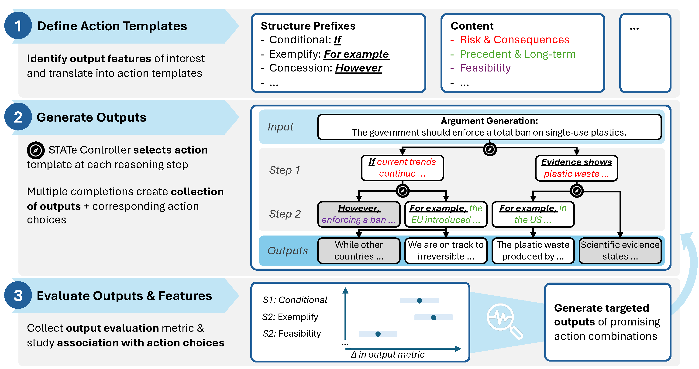
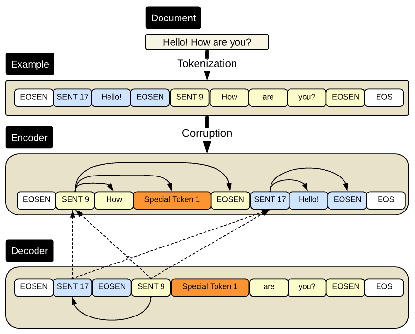

About
I am a PhD student at the Technion – Israel Institute of Technology, advised by Ofra Amir and Amir Feder. My research sits at the intersection of natural language processing, computational argumentation, and causal inference.
Before my PhD I was a software engineer at Google, where I built reinforcement-learning agents for recommendation systems and pre-trained on-device language models with federated learning. Earlier, I studied discourse structure and argumentation in Claire Cardie’s lab at Cornell University. My MSc at the Technion, advised by Yonatan Belinkov, produced DEPTH—a discourse-oriented pre-training objective for encoder-decoder language models.
I have served as a teaching assistant for natural language processing and introduction to computer science (Python) at the Technion, and for operating systems and NLP at Cornell.
In Summer 2026 I will be a visiting student researcher at Princeton University through the Visiting Student Research Collaborations (VSRC) program, hosted by Brandon Stewart.
- Advisors
- Ofra Amir & Amir Feder
- Education
-
PhD, Data & Decision Sciences, Technion (2024–)
MSc CS, Technion (2021–2024)
BSc CS, Cornell (2015–2019) - Institution
- Technion – Israel Institute of Technology
- Previously
- Google · Amazon · Intel · Mellanox · Cornell
- zachary@campus.technion.ac.il
Papers
STATe-of-Thoughts: Structured Action Templates for Tree-of-Thoughts
Preprint
Problem. Inference-time methods like Tree-of-Thoughts diversify reasoning trajectories through temperature sampling, but temperature cannot control how branches differ, nor produce traces that explain which reasoning choices drove output quality.
Method. STATe replaces sampling with discrete, interpretable textual interventions. A controller selects actions from a structured action space (e.g., which discourse relation or subtopic to develop next), converts each into a text prefix that steers the generator's continuation, and an evaluator scores candidates to guide beam search. Each surviving branch carries a logged sequence of actions.
Result. STATe substantially improves both the diversity and quality of generated outputs over temperature-based baselines. In argument generation, sequential models over logged action sequences prove highly predictive of output quality, showing that the ordering and composition of rhetorical choices carries meaningful signal.

DEPTH: Discourse Education through Pre-Training Hierarchically
Proc. 10th Workshop on Representation Learning for NLP (RepL4NLP) at NAACL 2025 · pp. 1–15 · Albuquerque, NM
Problem. T5 and its variants are pre-trained with span masking, which teaches token-level and semantic recovery but does not encourage the model to learn how sentences relate to one another structurally. Discourse understanding therefore depends entirely on task-specific supervision.
Method. DEPTH augments T5's span-masking objective with a discourse-oriented pre-training signal. The model is additionally trained to reconstruct the correct ordering of shuffled sentences—learning to reason about how ideas connect across a document, directly from unlabeled text and without changing the architecture or fine-tuning procedure.
Result. Pre-training with DEPTH improves data efficiency and downstream performance on tasks requiring discourse understanding. These gains also transfer favorably to other linguistic capabilities, suggesting that discourse-aware pre-training instills broadly useful representations rather than narrow task-specific ones.

Repositories
Inference-time compute with open-source LLMs: discrete textual interventions, structured action spaces, and tree search (DSPy and vLLM). Companion code for the STATe-of-Thoughts paper.
DSPy-based Tree-of-Thoughts for persuasive argument generation and evaluation, with beam search and Monte Carlo tree search.
News
- Summer 2026 Visiting student researcher at Princeton through VSRC, hosted by Brandon Stewart.
- 2025 Applied Scientist Intern at Amazon Sponsored Products (Seattle): prompt engineering for agentic recommender systems.
Contact
Technion – Israel Institute of Technology
Haifa, Israel